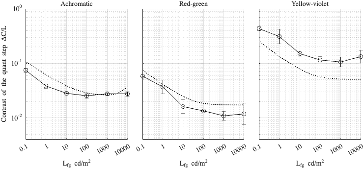

Fitting config: dither, model: mutual_masking
Fitting error (RMSE): 2.2555
Model parameters
p.beta = 1.05489; p.beta_cc = 1.0001; p.gs_num = [ 0.464186 0.2 0.964926 ]; p.noise_params = [ 0.28575 0.535286 0.434474 ]; p.dither_mask_params = [ 0.00339459 1.05911 1.02681 ]; p.blue_dither_params = [ 35.348 272.66 2.66044 2.21399 ];
Dataset: [ar2025]
Scaling factor: 0.33659
Dataset: [kim2020]
Scaling factor: 1.18154
